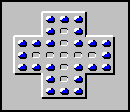
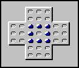
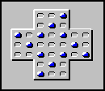

----------------------------------------------------------------------------------------------------------------------------------------
Jump is a game of logic with origins dating back to the 19th Century. No one knows for sure who invented the game, but several sources attribute its creation to a prisoner of the Bastille. The game was very popular throughout Europe in the 1800's where it was known as "Peg Solitaire" due to being played by moving pegs in a wooden board.
Jump is played by moving a peg across any adjacent peg and placing it into an open space on the other side. Only horizontal and vertical jumps are allowed. The peg that has been "jumped" is automatically removed from the board.
The object of the game is to jump all the other pegs so that there is only one remaining at the end.
It's "coolest" to leave the last peg in the center of the board, though it's still considered a "win" as long as only a single peg remains anywhere on the board.
Another interesting challenge is to start at the Solitaire level and jump pegs so that the following patterns are left:

The "Wall" pattern.
The "Square" pattern.
The "Pinwheel" pattern.Related topics
----------------------------------------------------------------------------------------------------------------------------------------
 Playing the GameTOPIC18
Playing the GameTOPIC18
Rules of the GameTOPIC19